数据可视化总复习
Ch1 数据可视化简介
可视化定义、目的、作用、分类
理解总览优先、大浪淘沙、精细入微
1.1 可视化定义
定义：对事物建立心理模型或者图像，是创建并研究数据的视觉表
可视化是创建并研究数据的视觉表达的一门交叉性的学科
1.2 可视化目的
由于：
-
数据爆炸，知识贫乏
-
科学数据爆炸
-
大数据时代
使用可视化可以：
- 提高传输效率
- 启迪智慧（思维导图）
- 分析数据规律（图表）
通过可视化来：
- 记录信息、数据分析、协助思考、交流传播、增强认知
1.3 可视化作用
- 记录信息
- 地图：记录空间信息
- 分析数据
- 抽象、提炼
- 例：地铁地图：
- 抽象了地理定位，突出表现了站点的接续，线路拓扑交叉，大体方向走势
- 例：地铁地图：
- 展示隐含模式
- 空间叠加分析原理
- 传播思想
- 区块链
1.4 数据可视化的分类
- 统计数据可视化
- 地理数据可视化
- 时变数据可视化
- 场数据可视化
- 层次和网络数据可视化
- 文本数据可视化
- 高维数据可视化
1.5 如何理解总览优先、大浪淘沙、精细入微
可视化原则：总览优先、大浪淘沙、精细入微
- 总览数据特征
- 提出分析问题和条件
- 过滤数据
- 通过合适方式展示数据
Ch2 可视化交互
交互基本操作、适用场景
在什么场景适合适用什么样的操作；针对已有案例，对应哪个操作
比较基础常用的交互模型和空间；面向实际问题
2.1 交互基本操作
2.1.1 选择
标记区域以查看其特征或变化
常见操作：鼠标、悬停、刷选、框选
单击选择一个项目，并显示数据点的属性
圈选：选择范围
悬停：信息提示，悬停鼠标光标显示项目的详情
选择时的视觉混乱：解决方法：放大（探索）等其他交互手段
2.1.2 探索
目标：寻找某种清晰图案
方法：调节绘制，视角位置、大小等参数
- 显示不同的数据部分或属性
- 允许用户检查不同的数据子集
- 克服显示数据的大小
- 实例
- 在数字医疗系统中改变视点
- 词典的互相链接
2.1.3 重配
- 显示一个不同的排列
- 通过改变空间排列提供不同的角度
改变数据的布局提供一个新的视角，提供多种合理的布局方式，避免绘制元素的过度重叠
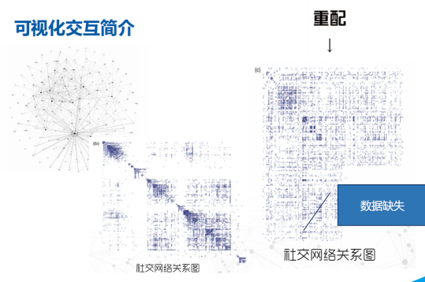
实例：更改在散点图的属性
- 重组视图：保持基本表述和数据显示不变，重组元素的位置、顺序
- 重新排序：选择某种属性进行排序
2.1.4 视觉编码
可视化的核心要素，改变视觉外观
实例：
- 改变颜色编码
- 更改大小
- 改变方向
- 更改字体
- 改变形状
举例：
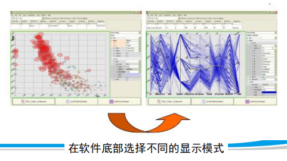
2.1.5 抽象/具体
显示更多或更少的数据细节，调整的抽象级别（概览和细节）
实例：提供互动的方法以展开子类别的缩放
2.1.6 过滤
显示符合条件的某些数据子集，基于某些特定的条件改变显示的数据集
-
过滤/限制
- 改变数据集的显示方式：聚焦；缩小/扩大
-
动态查询
- 加快工作效率
- 促进反向、撤销、探索
- 非常自然的交互方式
- 显示数据
2.1.7 链接
高亮显示数据对象间的联系，用户可以同时观察数据的不同属性
实例：直接高亮连接的结点
2.1.8 刷取
- 可视化常用技术
- 在一个视图中选择数据，另一个视图高亮
- 适用范围：同一个数据的多个视图
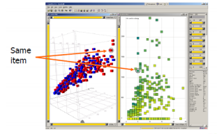
2.2 可视化的交互空间与模型
2.2.1 可视化的交互空间
可视化的交互空间：用户和可视化程序交互时所处的空间或者视窗
-
屏幕空间
- 直接控制屏幕上的像素显示
- 旋转、放大/缩小、移动、显示/隐藏
-
数据值空间
- 用户可以对某个或某些维度指定一个范围，查看该范围内的数据（过滤）
-
数据结构空间
- 指定可视化中数据的细节层次
- 例：思维导图
-
可视化参数空间
- 绘制参数，如颜色、大小等
-
可视化结构空间
- 关注系统的不同视图将视图位置、大小做成可以调整的，可以更有效的使用有限的屏幕空间
-
数据/物体空间
- 数据直接绘制空间
-
虚拟和现实空间
- 将数据和空间更紧密的结合
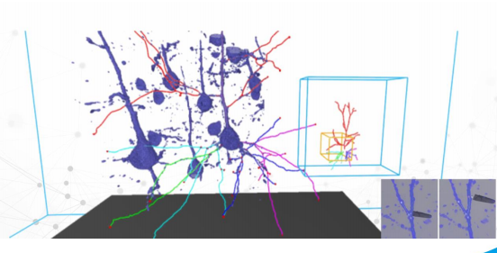
2.2.2 可视化交互模型
可视化存在的尺度问题：数据太大，不能再屏幕上显示完整，可能包含太多的事例/变量
- 概括+细节模型
- 在一个视图上集中显示所有的对象提供整体，再通过刷选、框选等交互在相邻视图中展示他们的细节
- 聚焦+上下文模型
- 显示大规模数据中的局部细节
- 对偶界面模型
- 多种混合交互方式
- 混合多种交互设备
Ch3 视觉感知与认知
感知：指客观事物通过人的感觉器官在人脑中形成的直接反映
认知：人们获得知识或应用知识的过程，或信息加工的过程
3.1 格式塔理论
不同格式塔理论的概念，能不能选出对应格式塔理论；
格式塔理论和视觉编码的关系，根据距离、颜色做什么样的区分
结构比元素更重要，视觉形象首先作为统一的整体被认知
3.1.1 接近原则
当视觉元素在空间距离相距较近时，人们通常倾向于将它们归为一组
3.1.2 相似原则
人们在观察事物的时候，会自然的根据事务的相似性进行感知分组，通常依据对形状、颜色、光照或者其他性质的感知决定分组
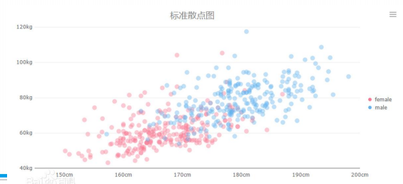
3.1.3 连续原则
人们在观察事物的时候，会很自然的沿着物体的边界，将不连续的物体视为一个连续的整体
3.1.4 闭合原则
- 在某些视觉映象中，其中的物体可能是不完整的或者不闭合的
- 只要物体的形状足以表征物体本身，人们会很容易的感知整个物体而忽视未闭合的特征
3.1.5 共势原则
当一组物体具有相似的光滑的路径运动趋势，或者具有相似的排列模式时，将会被识别为同一类物体
和连续原则有些相似
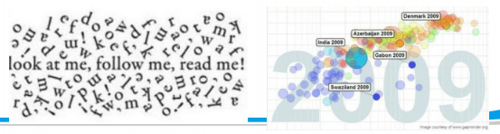
3.1.6 好图原则
人眼通常会消除复杂性和不熟悉性来理解被识别的物体
3.1.7 对称原则
人的意识倾向于将物体识别为沿某点或某轴对称的形状
对称的形状可以增加认知的愉悦度
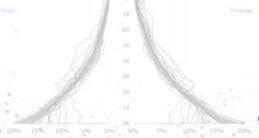
3.1.8 经验原则
在某些情形下，视觉感知与过去的经验有关。如果两个物体看上去距离相近或者时间间隔小，那么它们通常被识别为同一类
3.2 课后思考
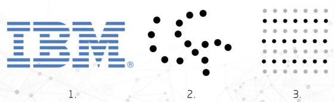
- 闭合原则
- 共势原则
- 相似原则
Ch4 可视化工具
三类；类型和特点
4.1 可视化工具分类
- 交互式可视化工具
- 完全面向用户的工具，不需要进行编程开发，只要进行一定的交互操作
- 例：Power BI、Tableau、Gephi
- 适用场景
- 用户：缺少编程基础
- 数据：简单
- 任务需求：简单、直接
- 配置式可视化工具
- 可以用较少的代码量生成一个较为完整的可视化图表
- 例：Vega、Echarts
- 适用场景
- 用户：有一定编程基础
- 数据：简单、结构清洗
- 任务需求：中等复杂度，交互任务较多
- 编程可视化工具
- 使用较为底层的代码库，自由的组织可视化元素，并在可视化元素上添加复杂的交互
- 例：Open Graphics Library、Sigmajs、Processing
- 适用场景
- 用户：编程能力强
- 数据：复杂
- 任务需求：难度高、复杂
Ch5 理解数据
5.1 数据的属性
重要，所有可视化表达的基石
分为哪些类型？
属性：数据对象的特征或特性
-
类别属性（质量特征）——定性型属性
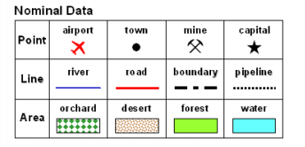
-
定量属性（数量特征）
- 序列
- 绝对数值
- 离散型、连续性
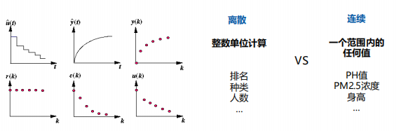
5.2 数据特征
使用场景
均值、中位数
| 类别 | 优点 | 缺点 |
|---|---|---|
| 均值 | 计算简单、快速获得 | 不适用于有序属性 |
| 中位数 | 避免极端值影响，适用有序属性 | 计算复杂，需先排序 |
方差
- 表达了数据的离散程度
- 方差越小，数据越集中
- 方差越大，数据越分散
分位数
- 每个类都含有相等数量的要素，适用于呈线性分布的数据
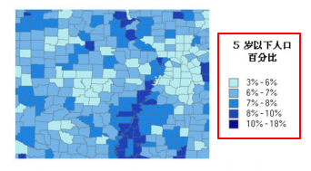
自然间断点分级法
- 对分类间隔加以识别，可对相似值进行最恰当的分组
- 自然间断点是数据特定的分类，不适用于比较使用不同基础信息构建的多个地图
Ch6 可视化流程
记住并掌握
数据采集、编码、交互
可视化路程是以数据的流向为主线，主要模块包括数据采集、数据处理和变化、可视映射和用户感知
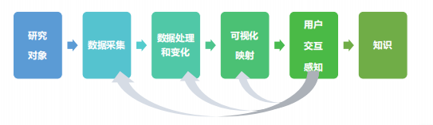
6.1 数据处理和变化
原始数据通过数据清洗、提取特征得到数据、特征
- 前期处理
- 原始数据含有误差噪音
- 数据模式特征隐藏
6.2 可视映射
可视化的核心
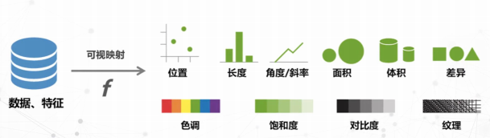
6.3 用户感知
从数据可视化的结果中提取信息知识和灵感可视化
用户 → 被动感知 + 主动交互
用户也会作用在可视化的各个环节
6.4 可视分析
结合可视化和数据挖掘的分析模式，以视觉感知为基本通道，通过可视化和交互界面，将人的知识或经验融入到数据分析和推理决策过程中，以迭代求精的方式将数据复杂度降低到人类和计算机可以处理的范围，获取有效知识
- 数据能否被可视化
- 数据为什么要可视化——理解用户分析行为与分析目标、搜索、查询
- 分析行为：
- 分析
- 搜索
- 查询
- 分析目标
- 适用所有数据
- 适用于数据属性的
- 针对网络数据
- 针对空间数据
- 分析行为：
Ch7 数据处理变换的途径
归一化、数据采样、数据聚类
7.1 数据归一化
将数据按比例缩放，使之落入一个小的特定范围，最典型的是把数据统一映射到[0,1]区间上
- 线性变换
- 反正切变换
7.2 曲线拟合
- 发现数据的趋势
- 分析变量之间的关系
- 将数据转化为平滑连续的曲线
基本思想：
表达并观测"趋势"
7.3 数据采样
- 统计领域：从总体中选出个体样本来估计总体的特征
- 信号领域：将连续信号简化为离散信号
7.4 分箱数据降维
离散化：将一些连续值分装进一些"小箱子"的方法（分区间）
选择合适的区间大小能让观众更好更快的了解数据概况
7.5 数据聚类
- 高的簇内相似性
- 低的簇间相似性
常见算法：
- k均值聚类
- 基于密度的聚类算法（DBSCAN）
- 用高斯混合模型（GMM）的最大期望（EM）聚类
- HAC凝聚层次聚类
- 最大最小距离聚类算法
Ch8 可视化编码
视觉编码的类别和应用（可视化标记、可视化通道）
视觉通道和格式塔理论的关系
基于什么选择，不同属性适用于什么样的编码
色彩设计的原则
8.1 可视化编码
- 标记
- 不同标记可以用于编码不同的数据
- 通常是一些几何图形元素，如点线面
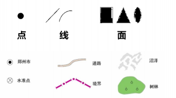
- 视觉通道
- 用于控制标记的展现特征，包括标记的位置、大小、形状、方向、色调、饱和度、亮度等。
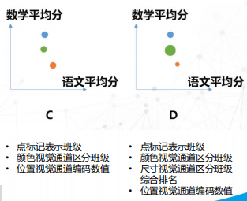
8.2 选用什么视觉通道进行编码
数据属性类别：
- 类别型 → 区分事物
- 有序型 → 标识对象间的顺序关系
- 数值型 → 标识对象的定量数值
视觉通道类型：
- 定性/分类型
- 描述感知对象是什么或在哪里
- 形状、颜色色调、空间位置
- 定量/定序型
- 描述感知对象某一属性的具体数值
- 直线长度、区域面积、角度、空间体积、颜色的饱和度、颜色的亮度
- 分组型
- 将存在相互联系的分类的数据属性进行组合
- 位置接近、颜色的相似、显式连接、显式包围
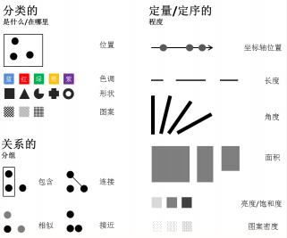
视觉通道的使用需要和数据的类型相匹配，组合多个视觉通道的使用可以表达多个维度的信息
8.2.1 形状
适用于定性/分类型
-
象形符号，艺术符号
- 显示大量标识的时候避免使用类似的形状，不易读
-
几何符号
-
同一组可视化作品中使用同等复杂的符号，避免突出某些形状，可以让用户更关注数据。
-
可视化大屏中应该设计统一的符号体系
8.2.2 位置
适用于定性/分类型、定量/有序型、分组型
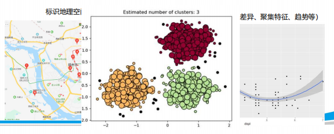
8.2.3 颜色
所有数据通道中最复杂的
HSV/HSL色彩空间
-
定性/分类型
- 色相：人类认为的颜色：赤橙黄绿
- 色调：人们在不连续区域的情况下通常可以分辨多达6-12种色调
-
定量、序列型
- 饱和度：纯度，与灰色的距离
- 大区域，可以使用低饱和度和颜色进行填充，分级层次可以略多
- 小区域，可以使用更亮、饱和度更高的颜色填充，分级层次不宜过多
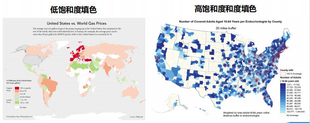
- 亮度：从黑色到亮色
- 饱和度：纯度，与灰色的距离
-
视觉感受效果：指代性
- 冷：稀疏、冷静
- 暖：密集、热情
- 接近实际物体的感受效果
- 情感感受效果：例如危险等级越高，使用的颜色越红
- 实体感受效果：例如我们使用棕色代表山脊，绿色表示平原
色调和饱和度与其他视觉通道相互影响：
-
可分辨的层次数量受到视觉通道相互影响而略有下降
-
小尺寸区域中难以分辨不同的色调
-
不连续区域中的色调也难以被准确比较和区分
配色方案：
-
避免单高饱和度与单低对比度的配色
-
避免色觉辨认障碍不友好配色
-
避免使用不同于常识的配色方案（例如使用深色表示数值小，浅色表示数值大）
-
同一作品中，不同视图中同类要素的配色应保持一致
-
定性指标：区分不同类别，应选择色环中同饱和度、明度的色相，不体现数量差异
-
对比：不同类，层次不同，互补色
8.2.4 尺寸
尺寸+色相+饱和度
标识数量差异
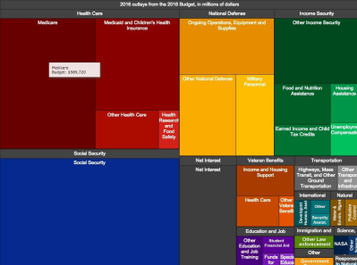
8.2.5 斜度和角度
定量/有序型
8.2.6 纹理
- 定性/分类型
- 科学数据可视化：纹理标识脑纤维
- 定量/有序性
- 纹理疏密+饱和度+明度 → 不同密度
- 用纹理代替色彩（色相、饱和度、明度）：色盲、色弱用户友好型
8.2.7 动态表达
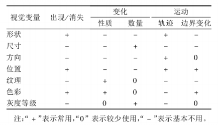
8.3 课后思考题
1、视觉通道有哪些类别？分别适合表达何种数据？
视觉通道分为定性/分类型，定量/定序型，分组型。
定性/分类型适用于描述感知对象的类别，是什么或在哪里。
定量/定序型用于描述感知对象某一属性的具体数值
分组型适用于存在相互联系的分类的数据属性，将其进行组合
2、举例说明，对于同一个标记，在何种情况可以使用哪些视觉通道的组合来表达多维信息，视觉通道的叠加使用是越多越好吗？
举例：
视觉通道的使用需要和数据的类型相匹配，组合多个视觉通道可以表达多个维度的信息，但是视觉通道的叠加使用不是越多越好，过多的视觉通道容易导致用户可分辨的层次数量降低，不利于用户关注数据
3、如何运用视觉通道描述格式塔理论？
要运用视觉通道描述格式塔理论，可以根据不同阶段所处理的信息类型划分不同的视觉通道。例如，低层次的视觉通道可以负责识别基本形状、颜色和明暗度等低级特征，高层次的视觉通道则可以负责识别更抽象和复杂的概念，如人脸、文字等。
在实际应用中，可以利用这些视觉通道来设计有效的视觉传达方式。比如，在设计海报时，可以通过运用鲜艳的颜色和简明的图示来吸引人们的注意力，然后再加入更具体的细节和文字引发更深层次的思考。
4、如何利用纹理变量表达多维信息？
可以通过不同样式的纹理来表达不同的类别，用不同疏密程度的纹理定量，也可以不同纹理叠加或不同纹理和颜色叠加来表达标识类别的共存。
例如：在地形生成中，使用高度图纹理来表示地形高度，并使用不同的颜色纹理来表示地形类型，如草地、森林、水域等。
5、如何更好的完成可视化色彩设计？
配色原则；根据用户、任务特征（颜色的感受效果、指代性）来选择颜色；他山之石，可以攻玉，善于参考大自然、名画大师的配色；善用工具。
Ch9 可视化设计
基本原则、通过什么样的途径实现
通过可视化原则对一些图进行评判
可视化中的信、达、雅
- 信：可信
- 面向对象明确目标
- 理解数据
- 科学的模型
- 达：通达
- 正确的视觉变量
- 合适的表达方法
- 合适的图面配置比例
- 高效的交互手段
- 雅：
- 艺术
- 创造性
- 联想
9.1 信息负载量
展示数据筛选：
确定在有限的可视化空间选择适当数量的信息进行数据编码
- 筛选信息密度，使信息展示量恰到好处
- 区分信息主次，使信息显示主次分明
信息过多：
抽样或聚类做信息的聚合，或升高维，或通过放大缩小帮助用户进行了解要素的细节
9.2 视觉编码原则
标记（图形元素：点、线、面）
通道（位置、大小、形状、方向、色调、饱和度、亮度）
- 视觉通道选择
- 标记选择
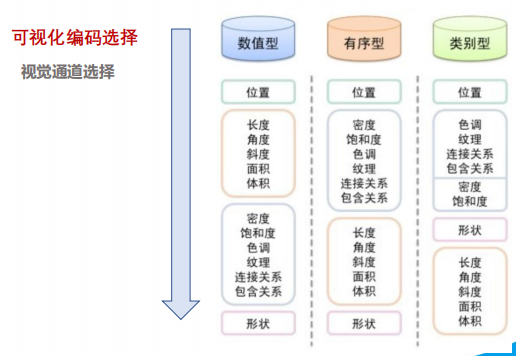
表现力
- 表达且仅表达数据的完整属性
- 判断标准：精确性、可辨形、可分离性、视觉突出
有效性
- 通道表现力符合属性的重要性
9.2.1 表现力和有效性
格式塔原则指导信息布局，可以帮助用户一眼就找到他们想要的内容，并一目了然的了解所看到的内容
-
可辨性
- 动态表现范围
- 简单：避免过多元素，避免过于复杂
- 合理的配色，避免颜色相近的不合理配色
- 色彩分级数量不宜过多
- 合理配色（考虑色觉障碍用户）
-
可分离性
- 位置/色调；尺寸/色调；宽度/高度
-
视觉突出
- 分组优先级
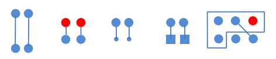
- 相对性&绝对性
- 感知系统基于相对判断而非绝对判断
- 对比和分层
- 使用亮度对比优先于色彩
9.2.2 图面配置
稳定的构图：
均衡：有效利用空间，重要元素位于中心区域，所有元素均衡分布
分组对大部分任务有效。如果不能进行分组，你需要转换任务以支持分组。
均衡&负载适宜
标注和说明
数据墨水：可视化图形中不可擦除的核心部分
非数据墨水：可视化图表中的非核心部分，例如图标刻度、单位、坐标轴
数据墨水占比：数据墨水/绘制可视化所使用的所有墨水
减少墨水的不必要占用，让图表精简的展示数字信息
9.2.3 视图与交互设计
交互方式
- 滚动和缩放
- 查看更多的详细的数据信息
- 颜色映射
- 数据映射
- 细节层次控制
- 有助于在不同条件下隐藏或者突出数据的细节部分
9.2.4 动画与过渡
- 增加可视化结果视图丰富性与可理解性
- 增加用户交互的反馈效果，操作自然、连贯
- 增加重点信息或者整体画面的表现力，吸引用户的关注力，增加印象
- 用时间换取空间，在有限的屏幕空间中展示更多的数据
- 辅助不同可视化之间的转换与跟踪，或者辅助不同可视化视觉通道的变换（例：从柱状图过渡成饼状图的动画过渡技术）
- 增加用户在可视化系统中的交互反馈效果
- 引起观察者注意力
- 适量原则
- 统一原则
- 易理解原则
- 简单的形变、适量的市场、易判断、易捕捉
9.2.5 视觉隐喻
在视觉上将目标物体/形象与另一领域的（源）物体进行相似性对比
（用人们熟悉的某样事物去表达信息，使得可视化内容更加直观、易懂）
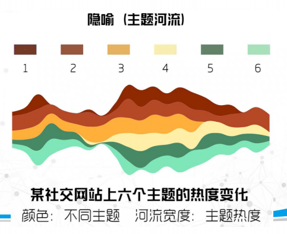
9.2.6 空间感与元素的精致感
- 高级感、符合可视化主题的颜色搭配
- 具有很强的空间感，且信息承载性强
- 高精度材质构建出的模型，配合贴近现实的光影
- 丰富的粒子流动、光圈闪烁等动画效果
9.3 课后思考
结合视觉通道原理、格式塔心理学、可视化设计原则评述、赏析凯度作品
chatgpt真牛
赏析可视化作品：
- 视觉通道原理
- 该可视化作品使用了哪些视觉通道（如颜色、形状、大小等）？
- 这些视觉通道是否有助于传达信息，或者是否干扰了信息的传递？
- 格式塔心理学
- 该可视化作品是否符合格式塔心理学的规律（如接近原则、相似原则等）？
- 这些规律是否有助于提高可视化作品的吸引力和易读性？（结构比元素更重要，视觉形象首先作为统一的整体被认知）
- 可视化设计原则
- 该可视化作品是否符合可视化设计的基本原则（如简洁性（信息的数量和密度）、一致性（元素风格）、可交互性等）？
- 这些原则是否有助于使信息更加明确和易于理解？
- 综合评价
- 根据以上分析，该可视化作品的优点和不足是什么？
- 该可视化作品是否能够准确地传达信息，并且具有良好的美学效果和易读性？
注意：在评述、赏析可视化作品时，应该针对具体的作品进行分析，并根据实际情况选择合适的分析方法和原则。同时，评价可视化作品的好坏应该考虑到其设计目的、受众群体和背景等因素。
Ch10 不同类型可视化
10.1 空间场数据可视化
命名、多元结构、多维结构
场数据：包含按照坐标或者拓扑结构存储的单元格，每个单元格存储1个或多个属性值，场数据是对连续空间进行度量的结果。
度量：密度、温度、速度等
度量方式：现实世界/软件模拟
10.1.1 分类：
命名：根据空间的维度与属性值来共同命名
-
多元结构
- 属性值（降雨、湿度、风速等）
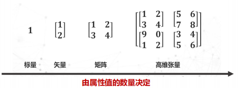
-
多维结构
- 空间维度（一维、二维、三维）
| 数据 | 类别 | 分析 |
|---|---|---|
| 降雨数据 | 二维标量场 | 1个属性，二维空间 |
| 湿度 | 三维标量场 | 1个属性，三维空间 |
| 风场 | 三维矢量场 | 2个属性（风向、风速），三维空间 |
| 核磁共振扫描 | 三维张量场 | 多个属性，三维空间 |
10.2 时间序列可视化
重要；
具体形式：分析应用场景、图表
时变数据：随着时间变化的、带有时间属性的数据
分类：
- 时间序列数据
- 顺序型数据
特点：
- 量大
- 维数多
- 变量多
- 类型丰富
- 分布范围广泛
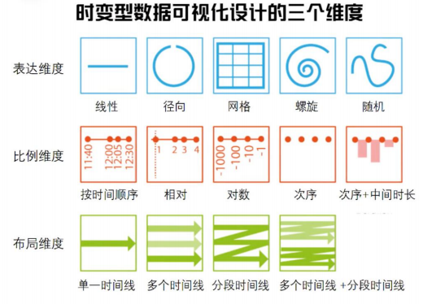
10.2.1 三个维度——表达维度
原理、应用场景
-
线性
- x轴表示时间，y轴表示其他变量
-
径向
- 将时间序列编码为弧形
- 沿圆周排列
- 合适呈现周期性的时变型数据
-
网格
- 和日历相对应
- 一般采用表格映射的方式
- 例：热力图
-
螺旋
- 时间序列沿圆周排列
- 螺旋布局
- 一个回路一个周期
-
随机
10.2.2 三个维度——比例维度
时间、次序，了解应用场景
- 比例维度（按时间顺序）可以用来表示事件之间的距离，事件的持续时间
- 相对顺序是指存在一个基线事件在事件零点，可以被用在多时间线的对比
- 对数比例强调了最早的或最近的事件，适用于长范围或不均匀的时间布局
- 次序，只表达事件的顺序
- 次序+中间时长，可以用来表达长时间和不均匀分布的事件
10.2.3 三个维度——布局维度
- 分段时间线：一个时间线被有意义的进行划分，进行另一种形式的比较
10.3 地理数据可视化
投影的概念；点线面基本可视化方法；选择底图
10.3.1 投影
地图投影：将数据中的地理坐标转换成屏幕上的坐标
- 等角度（正形投影）
- 在地球外套了个圆柱
- 保证了投影面上任意三点之间的线段夹角，在投影角前后保持不变
- 缺点：面积变形明显
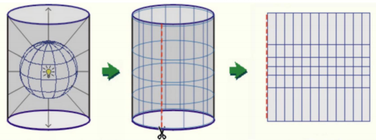
- 等面积
- 在地球外套了个圆锥
- 保证了投影面上任何图形的面积
- 适用于东西跨度较大的中低纬度的地区
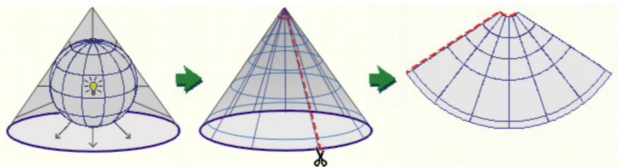
- 等距离
- 保证了投影后任意一点到投影所选中原点的距离不变
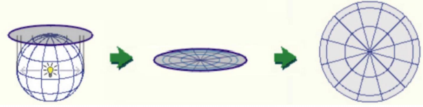
10.3.2 点线面基本可视化方法
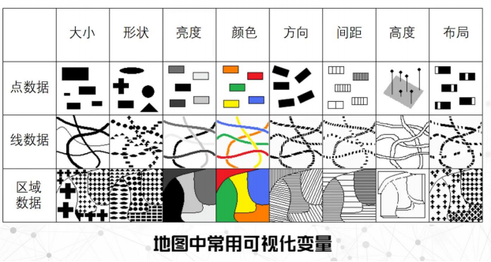
10.3.2.1 点数据可视化
-
定点符号法
- 不同尺寸、形状展示不用的类别、数量
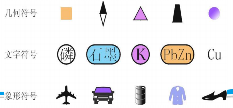
-
点值法
- 用代表一定数值的大小相等、形状相同的点， 反映某地图要素的分布范围、数量特征和密度变化的方法
- 原则：使密度小的地区得到表示，密度大的地区点子不产生连续、重叠现象
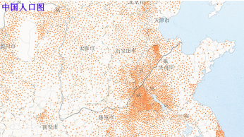
-
网格法
- 颜色表示定量或定性的信息
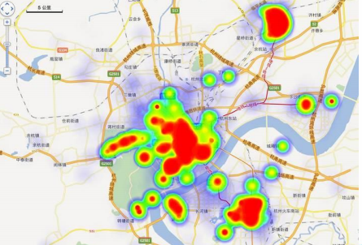
解决大量点数据压盖问题的方法：聚合、采样
10.3.2.2 线数据可视化
- 线状符号法：定量或定性信息
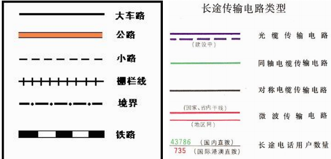
- 动线法
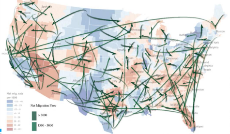
解决大量线数据压盖交叉问题的方法：
- 边绑定：将走势一致的线作为边的绑定
- 采样方法
距离变形地图：把时间转换为空间的变形地图，用在道路网络的高度抽象
10.3.2.3 面（区域）数据可视化
-
等值线法：绘制等值线、标注数据大小
-
分级统计图法：包括统计值的区域数据
- 不足：
- 假设数据在区域内平均分布，无法展示区域内部的差异
- 不能很好的展示面积较小，但是数据十分重要的区域，造成视觉误导
- 解决方法
- 面积变形地图：按照地理区域的属性值对区域进行变形
- 多灵地图：保持区域间的相对拓扑关系不变，简化区域集合形状用面积和颜色表示数量
- 不足：
-
分区统计图表法：表达向量型定量信息——数量、方向
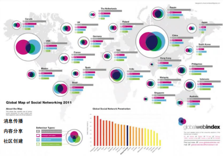
-
点、折线图标记法
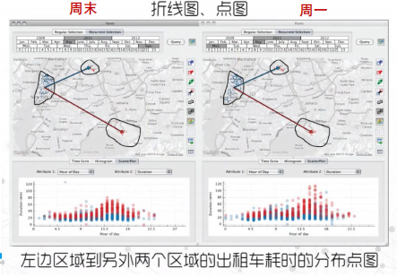
-
质底法、范围法：颜色、纹理标记区域
10.3.3 地图底图的设置
按照底图要素类型、所含要素、视图风格选择
是用于制作专题地图的基础底图。 它是专题内容在地图上定向定位的地 理骨架。
按照底图要素类型：
-
影像底图
- 多用于与地表覆盖类型紧密相关可视化主题（如城市开发、城市状态监管、城市状态模拟、农业种植）
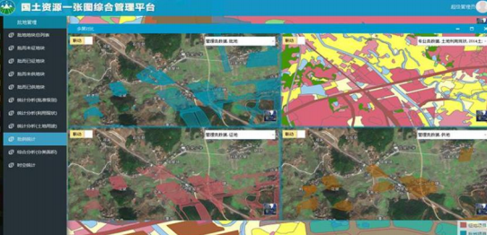
-
地形底图
- 多用于与地形分布类紧密相关可视化主题
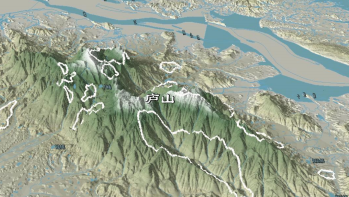
-
矢量地图
- 具有一定普适性，多用于各类城市可视化应用
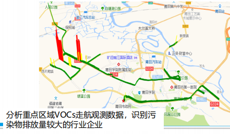
-
BIM模型
- 大比例尺区域，智慧城市、数字孪生类主题使用
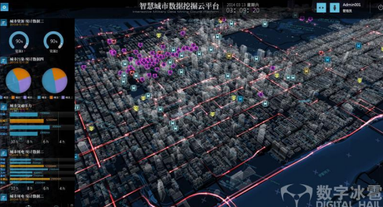
按照所含要素：
-
含有地名、地址信息
- 多用于比例尺较大，要素与地址分布具有一定相关性
- 含有自然要素信息
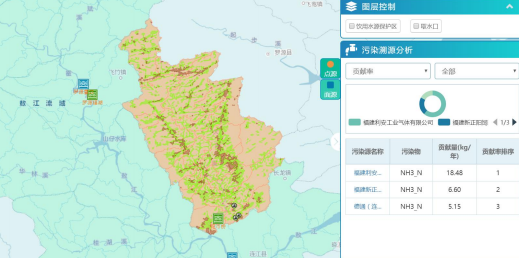
-
只含有行政区划及其名称
- 多用于区域统计数据，一般地图比例尺较小
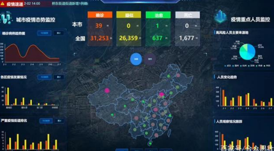
按照视图风格：根据系统界面的整体风格选择相应配色风格的底图
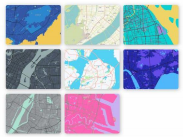
10.4 高维数据可视化
线性降维的方法与应用场景
散点图矩阵、镜像图，了解使用原理，读得懂
数据的维度：数据包含的属性的数量
多维度数据：拥有多个属性的数据
一个n维的数据可以用一个n元组表示；维度大于等于2的数据就是高维数据
10.4.1 线性降维方法
主成分分析
- 找到若干个新的投影维度
- 使每个维度的数据方差最大
- 每对维度之间的协方差最小
优点：
-
去除冗余信息
-
每维度之间线性无关
应用：特征人脸
多维尺度分析（MDS）
输入：高维数据点间的距离矩阵M
输出：所有数据点在二维平面上的坐标
投影空间（平面）中点对点之间的距离尽量和原始空间距离保持一致
10.4.2 高维数据可视化呈现
10.4.2.1 基于点的方法——散点图矩阵
散点图矩阵可以表现出属性之间的相关关系
特点：
- 每个散点图所表示的数据是高维数据的两个属性
- n维数据的散点图矩阵包括n乘n个图标
- 对角线上放对应属性值的分布图
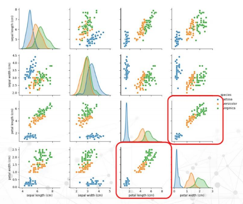
10.4.2.2 基于点的方法——径向布局
- 基于弹簧模型的圆形布局方法
- 将代表N维的N个锚点置于圆周上
- 根据N个锚点作用的N种力量将数据点散步于圆内
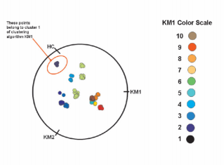
比如每个坐标值都会近似地居于离中心比较近的地方
对于位置相对的维度，若值比较相近，则点也会靠近圆心
如果点有一两个值比较大，则这个点会靠近这两个维度所在的位置等
10.5 层次数据可视化
基础可视化方法，优缺点，适用场景
10.5.1 基础可视化方法
结点链接法
优点：能够直观表达父子结点的层次关系，结构清晰
缺点：当树的结点分布不均或树的广度深度相差较大时，部分结点占位系数而另一部分结点密集分布，可能造成空间浪费和视觉混淆。
-
结点链接树、双曲树、三维树
-
正交布局
- 缩进法
- 易于实现
- 可以应用于纯文本或HTML
- 浏览大量数据时要滚动，可能失去上下文信息
- 树状图
- 布局规则，与视觉识别习惯吻合，直观
- 对于大型的层次结构，特别是广度比较大的层次结构，这样的布局会导致不合理的长宽比。
- 缩进法
-
径向布局
- 更好的利用空间
- 根节点位于圆心
- 节点到圆心的距离对应于他的深度
- 越外层的同心圆越大
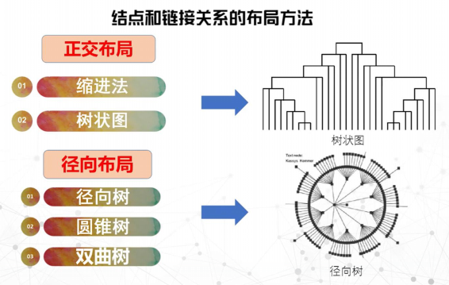
-
圆锥树
- 在三维空间中对树结构进行可视化的技术，结合了径向布局和正交布局
-
双曲树
空间嵌套填充法
优点：
- 充分利用空间，解决空间浪费和结点重叠
- 使用颜色和大小来编码
缺点：
- 结构不如结点链接法直观
- 难以辨识深层次结点
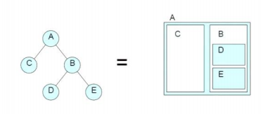
- 圆填充图、树图、Voronio树图
混合方法：既结构清晰，又有效利用空间
10.6 网络数据可视化
基础可视化方法，图简化
- 节点链接布局
- 邻接矩阵
- 混合布局
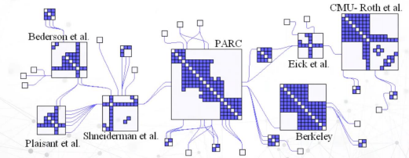
图的视觉优化：图简化
在尽量不减少图信息的前提下，用最精简的图结构去表现数据背后的特征规律。
- 基于点
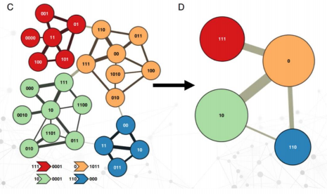
- 基于边
- 最常用的方法是生成树，即用一条路径来连接所有结点
优势：减少图的复杂程度
缺点：带来了信息的丢失
边绑定：在保持信息量不变的前提下，将图上互相靠近的边困成一束，达到化繁为简的目的
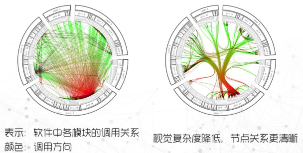